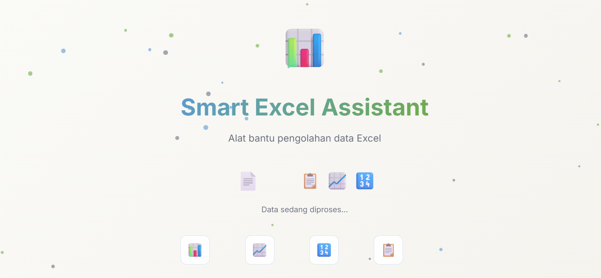

Kembali ke Portfolio
Website Data-Vista
Website untuk membaca dan menyajikan data supaya lebih mudah dipahami melalui tampilan yang interaktif dan informatif.

Fitur Utama
Key Features
Tampilan Data Interaktif
Data disajikan dalam bentuk tabel dan visual yang interaktif — memudahkan eksplorasi dan pemahaman informasi secara cepat.
Visualisasi Data
Mengubah data mentah menjadi grafik dan chart yang informatif — membantu identifikasi tren dan pola dengan cepat.
Responsif & Mobile-Friendly
Tampilan yang menyesuaikan dengan berbagai ukuran layar — dapat diakses dari desktop maupun perangkat mobile.